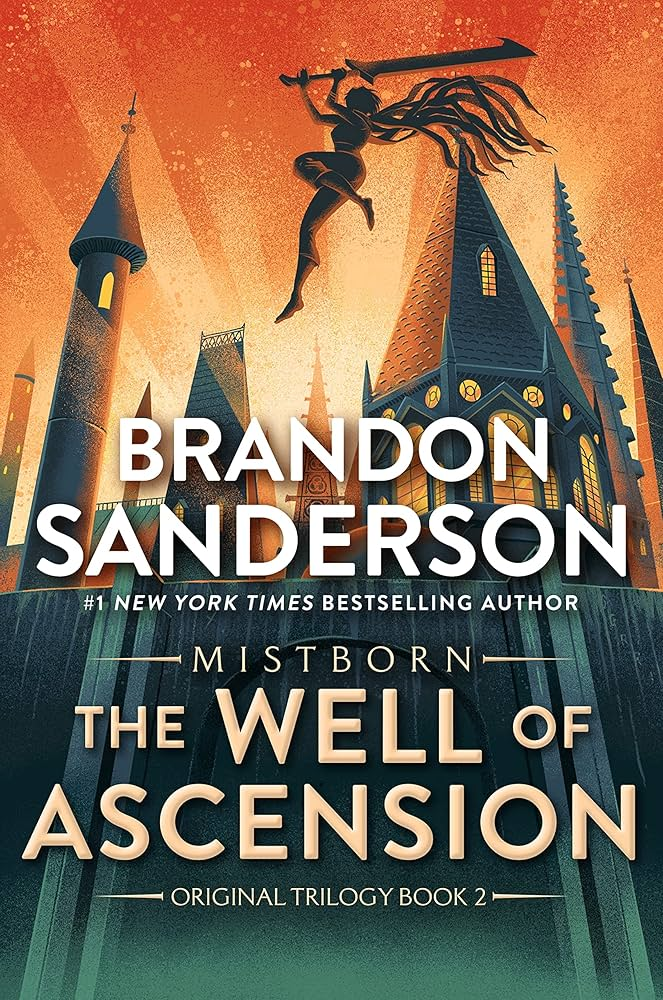
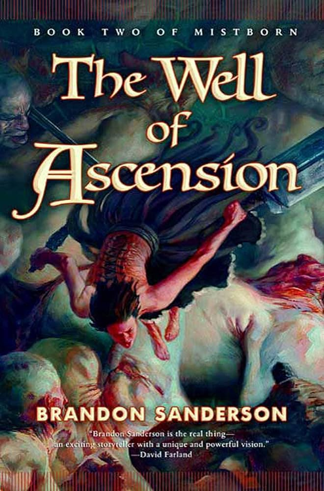
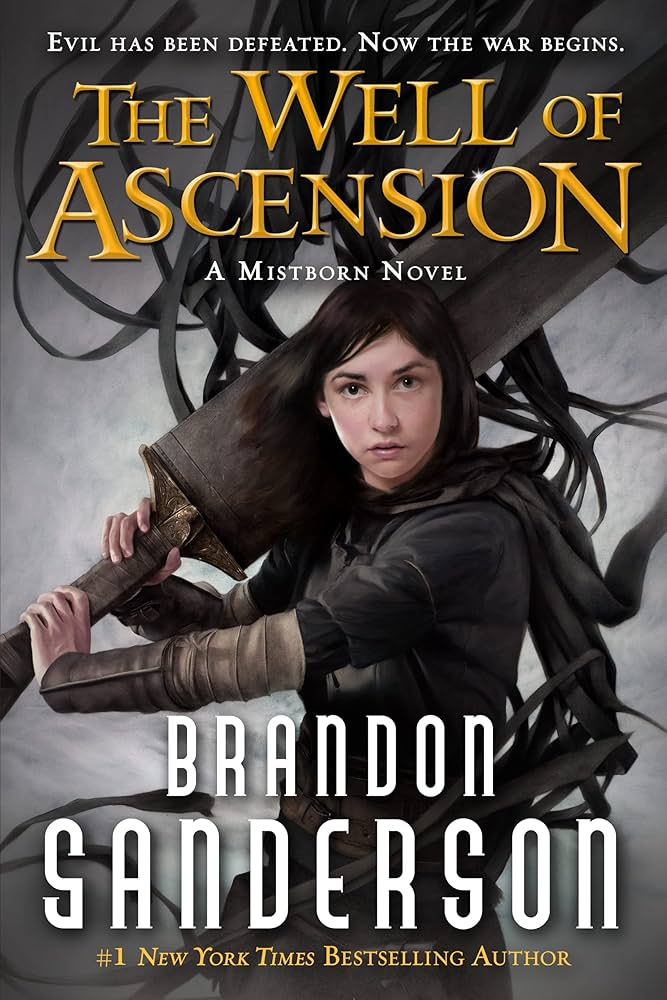
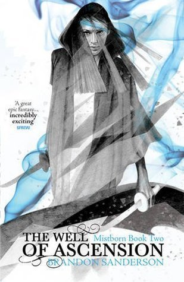

After the fall of the Lord Ruler, the world faces new threats. Vin struggles with her powers, Elend attempts to build a new kind of kingdom, and a mysterious force stirs beneath the surface. As armies close in and ancient legends awaken, the fate of the Final Empire hangs in the balance.
"A gripping sequel that deepens the world and characters in unexpected ways." - This Guy
"Sanderson masterfully blends politics, mystery, and magic into a compelling narrative." - The Narator


